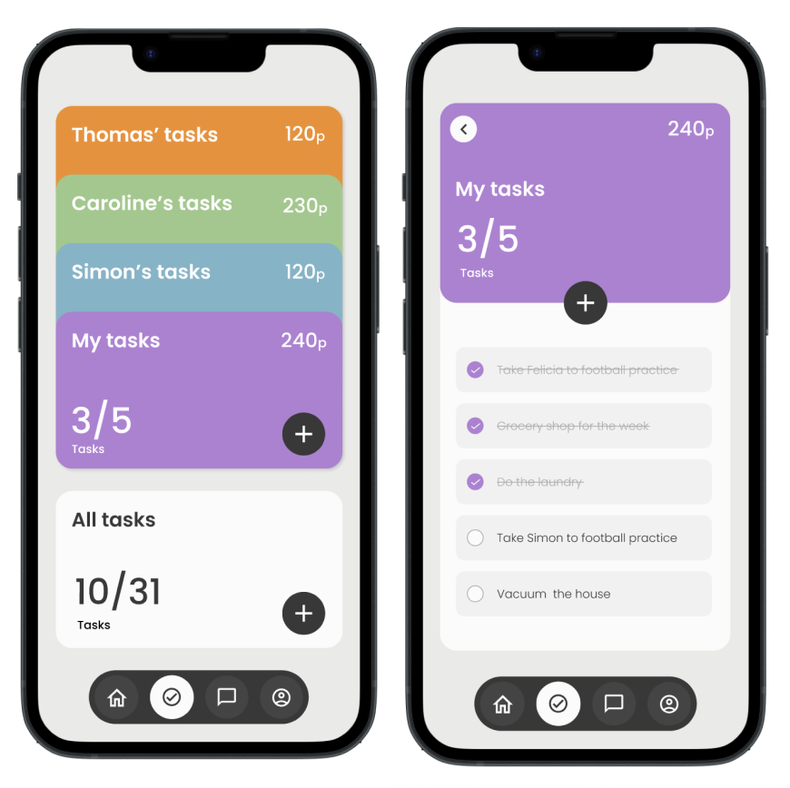
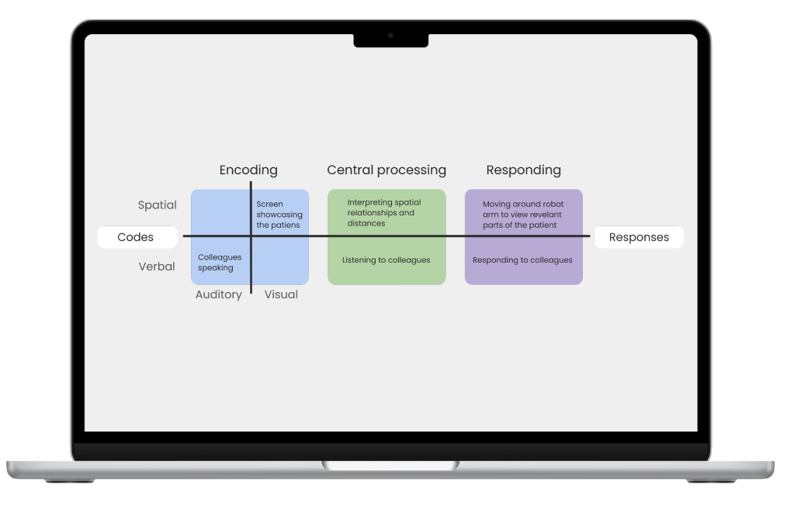

Maja Kjellberg
Interaction Designer with a passion for user research, HMI and UX/UI development. I strive to design intuitive, impactful experiences that bridge the gap between technology and human needs.


